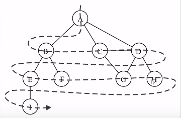
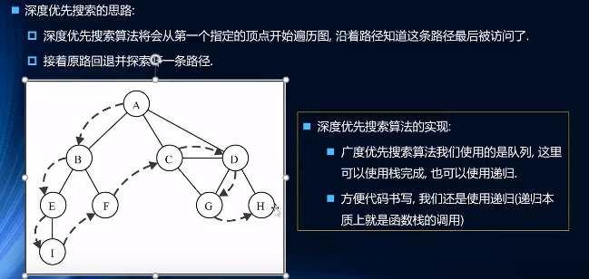

一组边：通常用V(Vertex)表示顶点的集合
一组边:通常用E(Edge)表示边的集合
边是顶点和顶点之间的连线路径：顶点 v1,v2...,vn的一个连续序列
简单路径：简单路径要求不包含重复的顶点
回路：第一个顶点和最后一个顶点相同的路径成为回路
图的遍历意味着需要将图中每个顶点访问一遍，并且不能有重复的访问
广度优先搜索(Breadth-First Search，BFS)
基于队列，入队列的顶点先被搜索
先宽后深的访问顶点
深度优先搜索(Depth-First Search，DFS)
基于栈或使用递归，通过将顶点存入栈中，顶点是沿着路径被探索的，存在新的相邻顶点就是访问
两种遍历算法都需要明确指定第一个被访问的顶点
为了记录是否被访问过，使用三种颜色来反应它们的状态